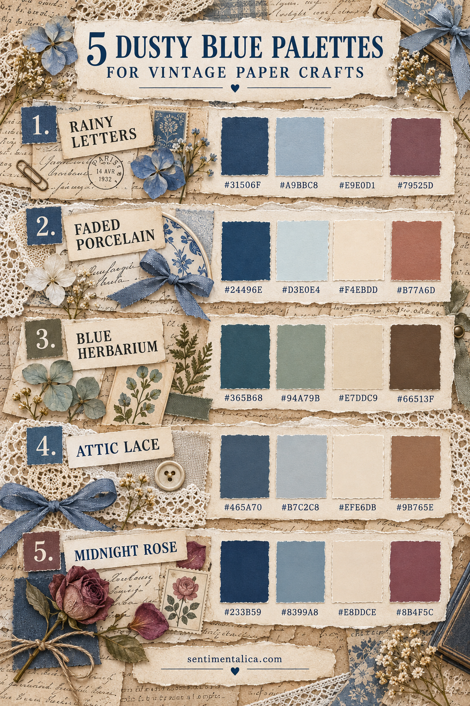
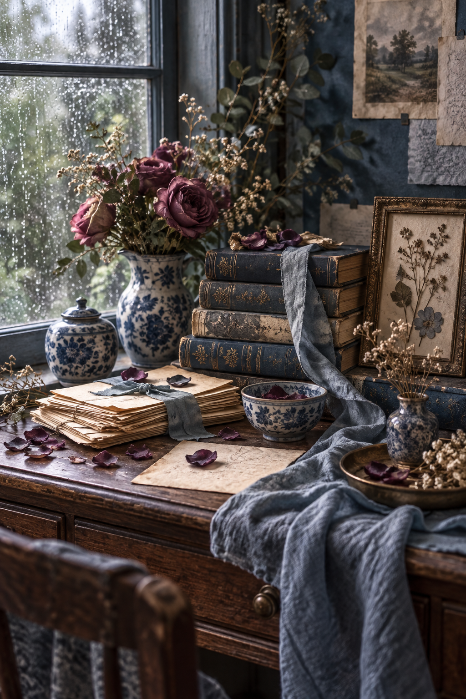

Dusty blue is softer than navy and steadier than pastel blue. It can feel romantic, archival, botanical or quietly dramatic depending on the colors beside it.
The easiest way to keep it from becoming cold is to include a warm paper neutral. Use the darkest color for structure, the lightest for breathing room, a mid-tone for connection and the final color as a small accent.
1. Rainy Letters
Deep Letter Blue `#31506F` gives the page an anchor. Rainwashed Blue `#A9BBC8` carries the mood, Old Paper `#E9E0D1` keeps the layers warm, and Faded Plum `#79525D` adds a restrained romantic note.
Use this palette for correspondence journals, handwritten pages and quiet rainy-day cards. Let plum occupy less than ten percent of the design.
2. Faded Porcelain
Porcelain Blue `#24496E`, Mist Glaze `#D3E0E4`, Warm Ivory `#F4EBDD` and Clay Rose `#B77A6D` create a cleaner, brighter combination.
This palette suits botanical cards and feminine scrapbook pages. Use blue as a frame, ivory as the main field and clay rose in one ribbon, flower or label.
3. Blue Herbarium
Herbarium Blue `#365B68` pairs with Pressed Sage `#94A79B`, Specimen Paper `#E7DDC9` and Walnut Stem `#66513F`.
It is the most natural palette of the five. Build with cream paper, then add blue and sage in similar amounts. Walnut works best as a thin line, stamped detail or thread.
4. Attic Lace
Attic Blue `#465A70`, Weathered Mist `#B7C2C8`, Lace Cream `#EFE6D8` and Cedar `#9B765E` feel faded but not grey.
Use this combination for old-book collage, lace pockets and heritage pages. Repeat cedar in two small places so the warmth travels across the layout.
5. Midnight Rose
Midnight Blue `#233B59`, Worn Chambray `#8399A8`, Letter Cream `#E8DDCE` and Dried Rose `#8B4F5C` make the richest palette.
Choose it when a page needs depth. Keep midnight blue around the edges or behind the focal piece. A single dried-rose accent is enough to create emotion.

A reliable proportion for every palette
Begin with 60% light neutral, 25% dusty blue or mid-tone, 10% dark anchor and 5% accent. This is not a rigid formula; it is a calm starting point when several beautiful papers compete for attention.
Test the palette with scraps before cutting full sheets. Stack four pieces so each color remains visible, then photograph them in the light where you normally craft. Remove any color that seems disconnected.
Materials can carry color differently
The same hex value feels different as matte paper, shiny ribbon, thread or watercolor. Use texture to create variety instead of adding a sixth color. A blue fabric strip and blue printed paper can feel layered while remaining harmonious.

Dusty blue becomes easier to use when it has a role. Give it a warm neutral companion, one dependable dark and one small emotional accent, then let texture provide the rest of the story.